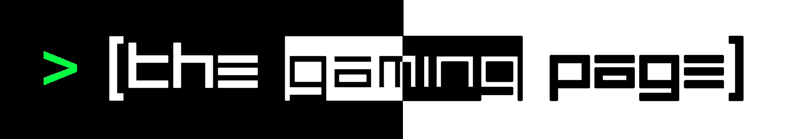
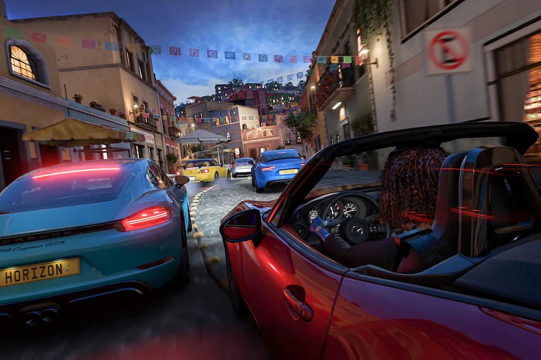

The Gaming Page
About
What is
"The Gaming Page?"
The Gaming Page is a page within The Digital Domain where you can find all the news and insights about game development, game reviews, game mods, and much, much more. Unlike with The Technology Page, The Gaming Page will feature news regarding video games from different generations. Please make yourself comfortable in The Gaming Page.
Game Review [FEATURED]
‘Forza Horizon 5’ will convince you to
love the racing game genre
Reviews of Forza Horizon games often veer into reminiscing about old memories of playing racing games.
The reason for this is simple: “Forza Horizon 5” offers almost everything in the history of the genre, and does
it better.
The cars are lifted straight out of a world-class driving simulator. The driving matches the best
arcade racers ever made, but it can also be customized to extremely specific preferences, including tweaking
transmissions, steering and brakes. And it’s got the Forza Horizon signature feature: an open-world game structure
so rich with content and game modes, it rivals the best adventures in the medium.
Read more
Play a Real SMT Game
Persona 5 Fans Aren't Happy
With Shin Megami Tensei V Reviews

While Shin Megami Tensei and Persona connect, crossover, have similar themes, and share the same developer, they are also two separate series. Today, the reviews embargo for Shin Megami Tensei V, the latest entry in the former, lifted a week ahead of its release. And so far, reviews are positive, with the game sitting at an 87 on Metacritic. This isn't as universally acclaimed as the most recent Persona game, Persona 5/Persona 5 Royal, but an 87 on Metacritic is nothing to sneeze at. That said, over on Twitter, many fans of the series aren't happy with the initial batch of reviews for the game, and not because of the scores, but because of how many reviews have mentioned Persona and Persona 5. Read more
Featured News:
Gaming
'Forza Horizon 5' Review
Reviews of Forza Horizon games often veer into reminiscing about old memories of playing racing games. The reason for this is simple: “Forza Horizon 5” offers almost everything in the history of the genre, and does it better. Read more
Technology
Sony and TSMC attempt to address chip shortages with a factory in Japan
The rumors of a Sony-TSMC chipmaking partnership were true. Nikkei reports Sony and TSMC are teaming up to build a semiconductor factory in Kumamoto, Japan that would tackle "strong global market demand" for specialized chips. Read more